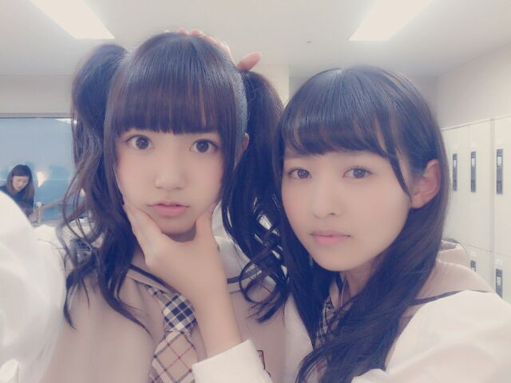
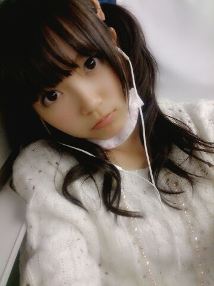
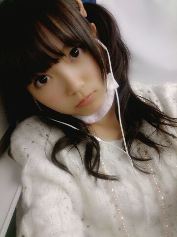
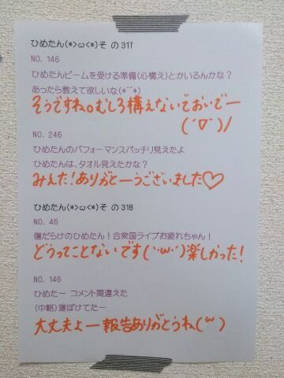

| 2013/10 23 Wed | ひめたん(*>ω<*)そ の359 |

日芽香アゴ引くなの図
安定のなかいさん
中元さんと伊藤(万)さんでなかいさん( ´ ▽ ` )
なんかこの万理華
童顔じゃない気がする！
気のせいか！ひめたん疲れてるのかな！
初コメさんありがとうっ
初コメ！って言われると わほーっ てなっちゃう♪
これからいっぱい遊び来てねー
それから、ベテランひめきゅんさんから
たーまーに言われることがあるんだけどね
ひめたんは遠くいったりしないよー
むしろいつも一緒だよー？
だから寂しいこと言わないの(｀・ω・´)めっ
そう、コメント読んでて気づいたの
ライブでやったヘアを報告してなかったねー
冒険女子もしばらくおやすみして
ヘアはとうぶん固定で行こうかなと。
ひめたんのことみなさんに覚えてほしいなって
あっ個握では冒険する！

こんな感じ。
ごめんねー本番前後はばたばたしてて
衣装で写め撮りそこねちゃった(´・ω・｀)
私服は白ニット りぼん
りぼん
隣で いくちゃん (生田絵梨花ちゃん)と
あしゅりん (齋藤飛鳥ちゃん)が
ずーとわしゃわしゃがやがやしてたんだけど
ライブで疲れちゃって
輪に入ってく気力がなかったので
おとなしく音楽聴いてた(´ω`)そーゆ日もある
２時間も新幹線乗ってたのに
なぜか降りる駅着くちょい手前になって
急にもんのすごい眠気が来た。寝れんかった。
風邪だいぶ治りました
93％くらい治りました！
明日にはきっと100％治ってるはず！
心配してくださったみなさん
ありがとうございました( ^O^ )
お礼に
今度みなさんが体調悪くなったら
全力で心配するねー♪
......違うそうじゃなくてっ
風邪ひいちゃだめだよ＼ ／
／
日芽香アゴ引くなの図
安定のなかいさん
中元さんと伊藤(万)さんでなかいさん( ´ ▽ ` )
なんかこの万理華
童顔じゃない気がする！
気のせいか！ひめたん疲れてるのかな！
初コメさんありがとうっ
初コメ！って言われると わほーっ てなっちゃう♪
これからいっぱい遊び来てねー
それから、ベテランひめきゅんさんから
たーまーに言われることがあるんだけどね
ひめたんは遠くいったりしないよー
むしろいつも一緒だよー？
だから寂しいこと言わないの(｀・ω・´)めっ
そう、コメント読んでて気づいたの
ライブでやったヘアを報告してなかったねー
冒険女子もしばらくおやすみして
ヘアはとうぶん固定で行こうかなと。
ひめたんのことみなさんに覚えてほしいなって
あっ個握では冒険する！

こんな感じ。
ごめんねー本番前後はばたばたしてて
衣装で写め撮りそこねちゃった(´・ω・｀)
私服は白ニット
りぼん
隣で いくちゃん (生田絵梨花ちゃん)と
あしゅりん (齋藤飛鳥ちゃん)が
ずーとわしゃわしゃがやがやしてたんだけど
ライブで疲れちゃって
輪に入ってく気力がなかったので
おとなしく音楽聴いてた(´ω`)そーゆ日もある
２時間も新幹線乗ってたのに
なぜか降りる駅着くちょい手前になって
急にもんのすごい眠気が来た。寝れんかった。
風邪だいぶ治りました
93％くらい治りました！
明日にはきっと100％治ってるはず！
心配してくださったみなさん
ありがとうございました( ^O^ )
お礼に
今度みなさんが体調悪くなったら
全力で心配するねー♪
......違うそうじゃなくてっ
風邪ひいちゃだめだよ＼
／

 もうすぐポケモン発売やけど
もうすぐポケモン発売やけど
ひめたんゎポケモンする？
ポケモンはやったことないし
あんま詳しくもないです(´・ω・｀)
ゆみ姉！
ひめたんはなんか好きな匂いある???
バニラの香りがすきです＊
パン屋さんもすき！
ひめたん可愛いからさ
デコ出ししてる写メ見てみたいなぁ〜
ダメかな？？笑
そーやってよいしょしても
だーめです( ^ω^ )( ^ω^ )( ^ω^ )
最近、友達がひめたんに
興味を持ったらしいから説明するときに
『乃木坂で』1番可愛い人って言っていいよね！？
うん、間違いなく伝わらないと思いますよー♪
ひめたんの前世ってなにーー？？
ひめたんの前世はチューリップだねって
かなりんに言われたことあるよ♪
みんなの前世について延々語ったなー
広島の竹原に行ってみたいんですが
ひめたんは行ったことありますか？
竹原！たまゆらの竹原ですね！
それが、行った記憶はないんですよね(´・ω・｀)
広島ゆーても広いので
実は未踏の地がたくさんあったり。
 北海道にも握手会行きたいって思う?
北海道にも握手会行きたいって思う?
行きたいいきたーいっ☆
プライベートでも遊び行きたい！
仕事以外の休みの日って
何してたりするのー？？？
１番最近のオフは
学校いって、音楽プレーヤーに曲追加して、
食器洗って、お洗濯して、
ブログ書いたら１日終わった＼(^0^)／充実してた！
ボート部って、どんなイメージ？
ひめたんのまわりのおともだちには
ボート部員誰もいないなあー
のほほーんってイメージだけど
競争とかするのかな？かっくいーいなあ///
いきなりだけどさー
みなさん寝るときあおむけ派？うつぶせ派？
ひめたんは うつぶせ派 なんだけど
下向いて寝ると顔がむくんじゃうらしいので
最近はがんばって あおむけ派 に転向中ヽ(^0^)ノ
うつぶせで寝るの落ち着くよねー......

(＊´・ω・＊)
コメント(471)
2013/10/23 22:18